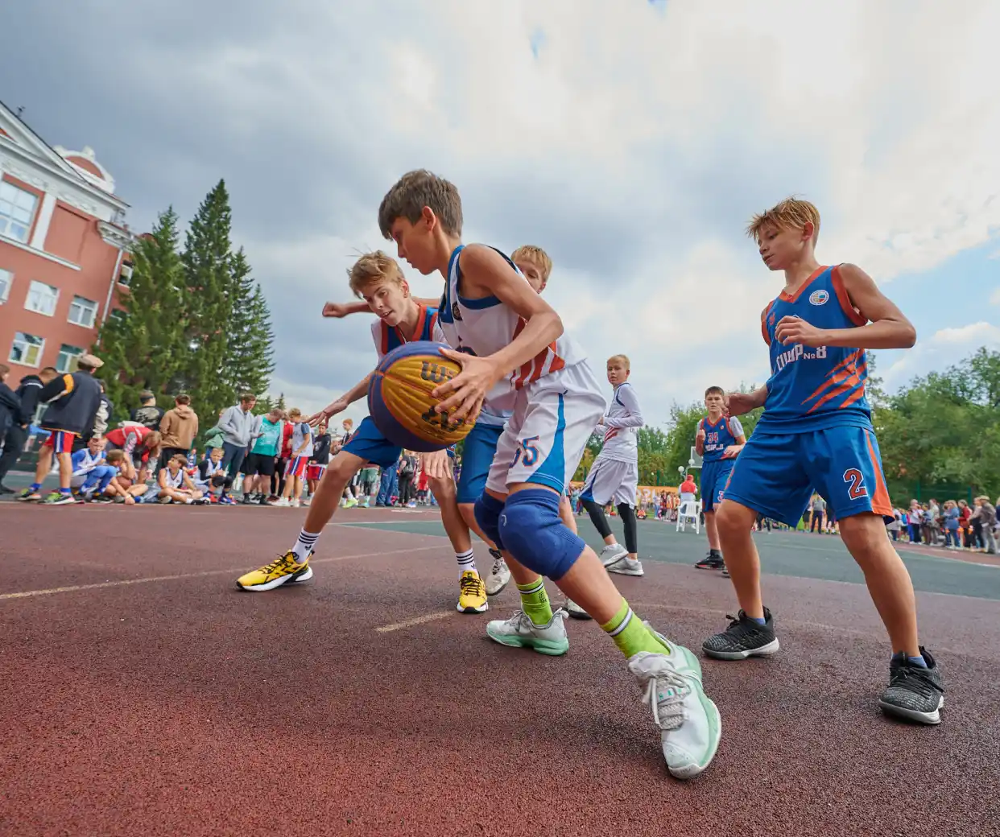

xpage: спортивный проект
Найди с кем поиграть в баскет
Найди с кем поиграть в баскет 2
Найди с кем поиграть в баскет 3
играй
в раздел Найди себе командуИгры на районе — это возможность найти с кем поиграть в баскетбол в выходные, или создать свою игру и пригласить других игроков присоединиться.- Создавай командыИгры на районе — это возможность найти с кем поиграть в баскетбол в выходные, или создать свою игру и пригласить других игроков присоединиться.
- Участвуй в турнирахУчаствуйте в турнирах вместе с вашей командой. Будьте активными, побеждайте и получайте ачивки и призы от наших спонсоров.
Учись
в разделмы собрали секции для детей по всему городу
12 секций по всему городу
Подбери тренера под свой уровень